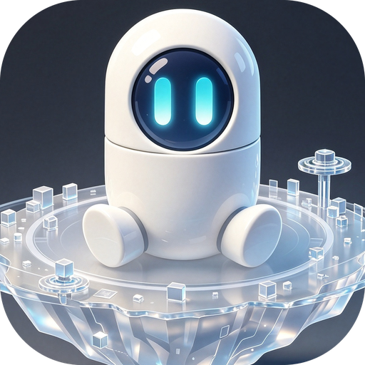
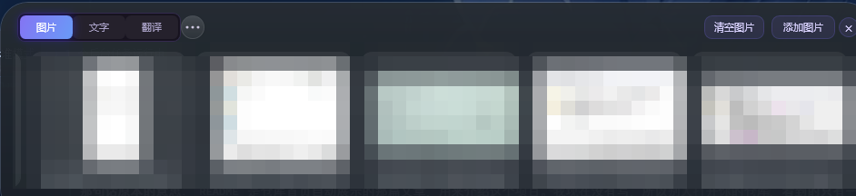
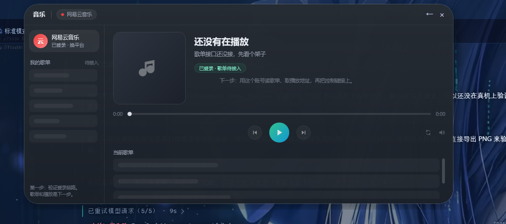
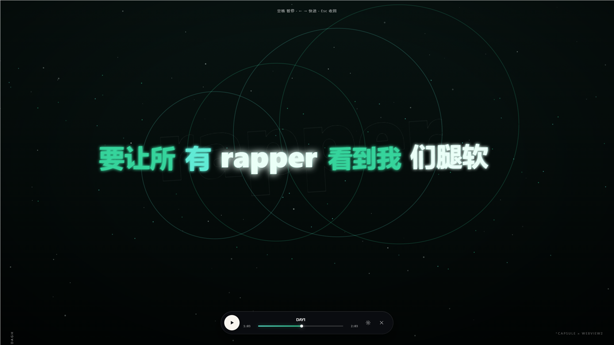

三种截图
区域、窗口、全屏。框选带放大镜，松手图片自动进胶囊，不弹窗、不打断。

万象岛Myriad Isle 下载
常驻屏幕顶部的一颗小岛。截图自动落进来，框住哪里就翻译哪里，
点一下还能长出抖音小窗和音乐面板。
单文件、免安装，所有数据都留在你自己的电脑里。

所有入口都在屏幕顶部这一小条上，不多开一个窗口，不打断你手上的事。
区域、窗口、全屏。框选带放大镜，松手图片自动进胶囊，不弹窗、不打断。
箭头、矩形、画笔、荧光笔、文字、气泡、步骤编号、模糊、马赛克、裁剪，随手标注完直接发。
文本翻译随手可用；屏幕翻译框住哪里译哪里，译文直接覆盖在原位置。
有新消息，胶囊右侧冒出一条提示。左边微信、右边 QQ，点一下就跳过去。
一键开录，优先走桌面复制（画面不闪），失败自动降级。输出标准 MP4。
独立置顶横屏小窗刷网页版抖音，可拖动可缩放，位置记住，再点一次即收起。
播放器、歌单、队列、封面、歌词；还能把歌词铺到桌面上，多种视觉样式。
内置 AI 面板，可接任意 OpenAI 兼容接口；也能用网页版大模型当后端。
解压即用，删文件夹即卸载。数据都在程序目录，换电脑拷走就行。
下面按真实使用顺序展开，看完基本不用再翻文档。
三种方式都用同一个逻辑：截完不弹窗，图片直接成为胶囊里的一张卡片。鼠标悬停放大预览，单击看大图，右键出菜单。
顶部就是这样一条，不挡视线
点开任意图片就能进编辑器，左侧工具栏一列排开，改完保存覆盖原图，或另存为新文件。
支持撤销 / 重做（Ctrl+Z / Ctrl+Y），文字可拖动、可拉长，步骤编号自动递增——写教程特别省事。
文本翻译：胶囊里点开「文字」页签，收进来的一段话可以直接翻。
屏幕翻译：按热键，框住屏幕上任意一块区域，OCR 识别后把译文盖回原来的位置，像给屏幕套了一层中文。
不用切窗口判断"是不是有人找我"。有新消息时，胶囊右侧会冒出一条提示：
收起 ≠ 已读：提示条消失只是不挡你，未读状态会一直保留到你去看。
点胶囊旁的 ••• → 抖音球，弹出一个横屏置顶小窗，里面是网页版抖音。
横屏小窗，像手机转 90°
点音乐球，面板从胶囊里展开：平台切换、歌单、搜索、播放队列、封面、歌词全在里面。
空格 暂停 · ← → 快进 · Esc 收回
按 Ctrl + Alt + Shift + R 开始，再按一次停止，视频自动挂进胶囊。
data\Recordings\录屏_时间戳.mp4需要本机有 ffmpeg：装到系统 PATH，或把 ffmpeg.exe 丢进程序目录。
同一套内核，两种取舍。标准版追求极致轻量，Pro 版把娱乐功能也装进来。
| 能力 | 标准版 | Pro 版 |
|---|---|---|
| 体积 | 486 KB 单文件 | 约 1 MB + WebView2 |
| 截图 / 图片编辑 | ✓ | ✓ |
| 文本 / 屏幕翻译 | ✓ | ✓ |
| 微信 / QQ 提示 | ✓ | ✓ |
| 录屏 / 视频播放 | ✓ | ✓ |
| 抖音置顶小窗 | — | ✓ |
| 音乐面板 / 桌面歌词 | — | ✓ |
| AI 问答面板 | — | ✓ |
| 三点球快捷入口 | — | ✓ |
两个版本可以同时安装、同时运行，互不冲突。
暗色玻璃质感，和桌面壁纸自然融合，不抢注意力。

Windows 10 / 11（64 位），需要 .NET Framework 4.8（系统一般自带）。
单文件 486 KB，只有截图、编辑、翻译、提示、录屏。最轻的选择。
在标准版之上，加了抖音小窗、音乐面板、桌面歌词、AI 问答。
C:\Program Files）MyriadIsle.exe（或 Pro 版的 MyriadIslePro.exe）Ctrl + Alt + Shift + A 试试截图程序未签名，若被 Defender / 360 / 火绒拦截，把文件夹加入信任即可。
多半是杀软拦截或缺少 WebView2（Pro 版）。先把整个文件夹加入信任；Pro 版还需要系统装 Microsoft Edge WebView2 Runtime（Win11 自带，Win10 可去微软官网下载）。
Windows 不允许低权限进程向高权限进程拖文件。请用普通权限运行万象岛（不要右键"以管理员身份运行"），也不要在低权限沙箱 / 远程桌面里启动。
默认走 MyMemory 免费接口，按天计算额度。可以等一会儿，或在设置里换成自己的 AI 模型（DeepSeek、智谱等都有免费额度）。
可能被输入法或其它软件占用。托盘右键 → 热键设置，换一组组合，程序会提示是否注册成功。
部分游戏或受保护窗口禁止桌面复制。可以切换录制模式，或换一个较新的 ffmpeg 版本。
不会。所有图片、文字、配置都保存在你本机 data\ 目录。只有你主动使用翻译时才会请求翻译服务；抖音 / 音乐是 WebView2 加载对应网站。
可以，进程名不同（MyriadIsle.exe / MyriadIslePro.exe），互不影响，甚至可以同时运行。
下载、解压、双击——三步之后，胶囊就在你屏幕顶部了。